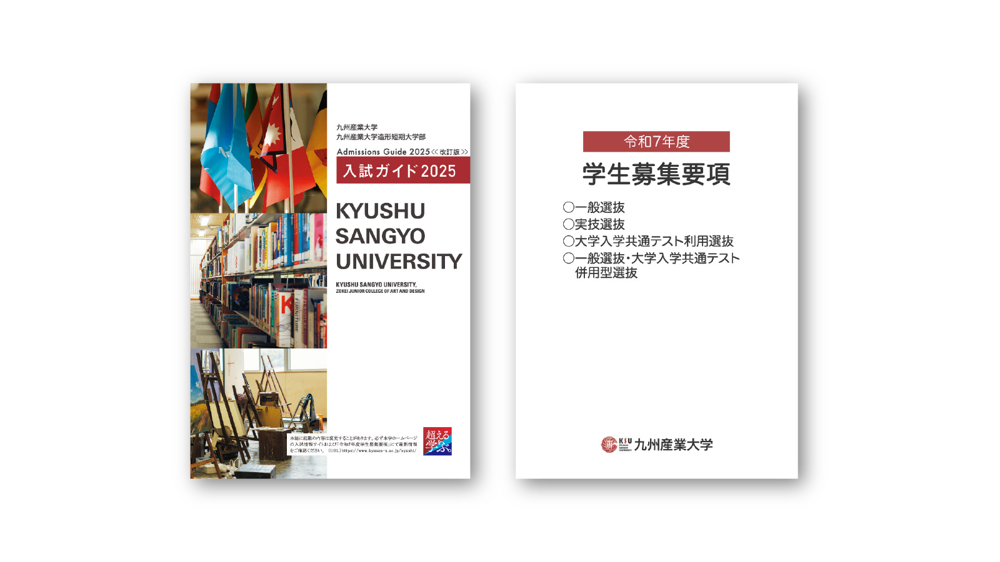
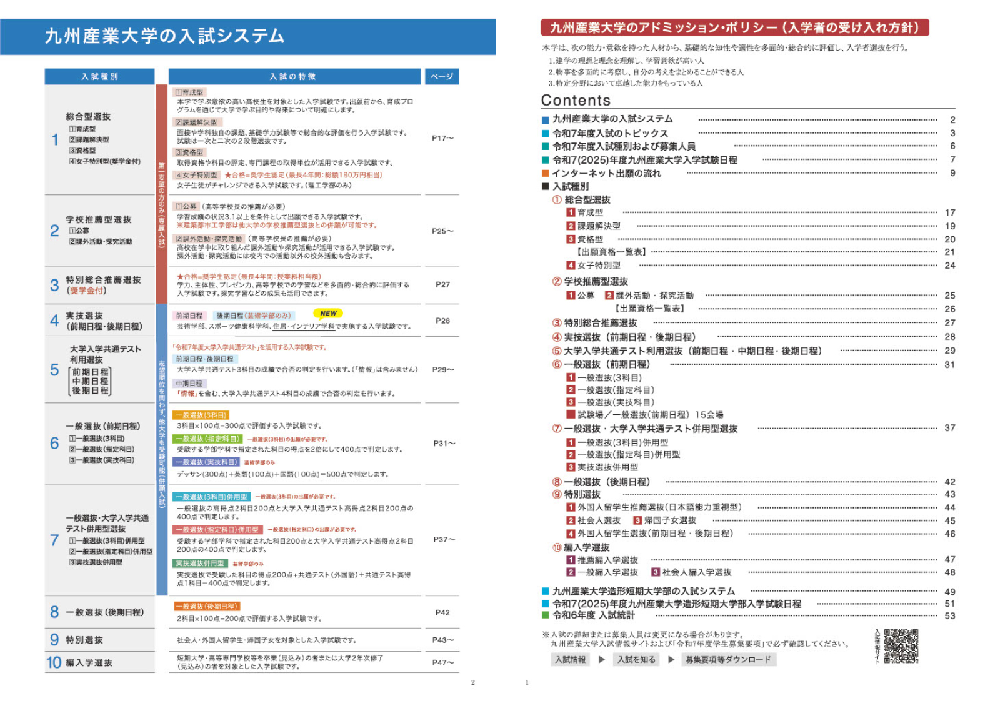
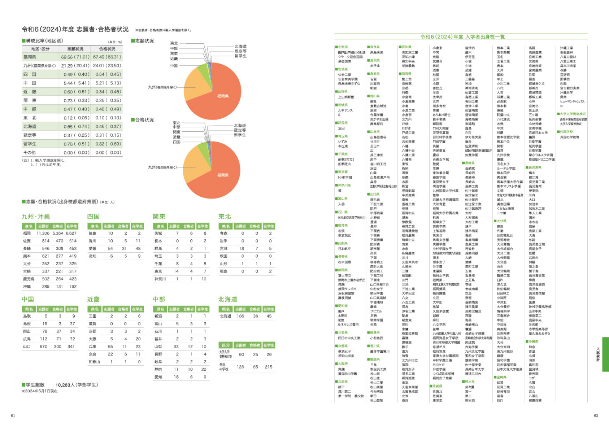
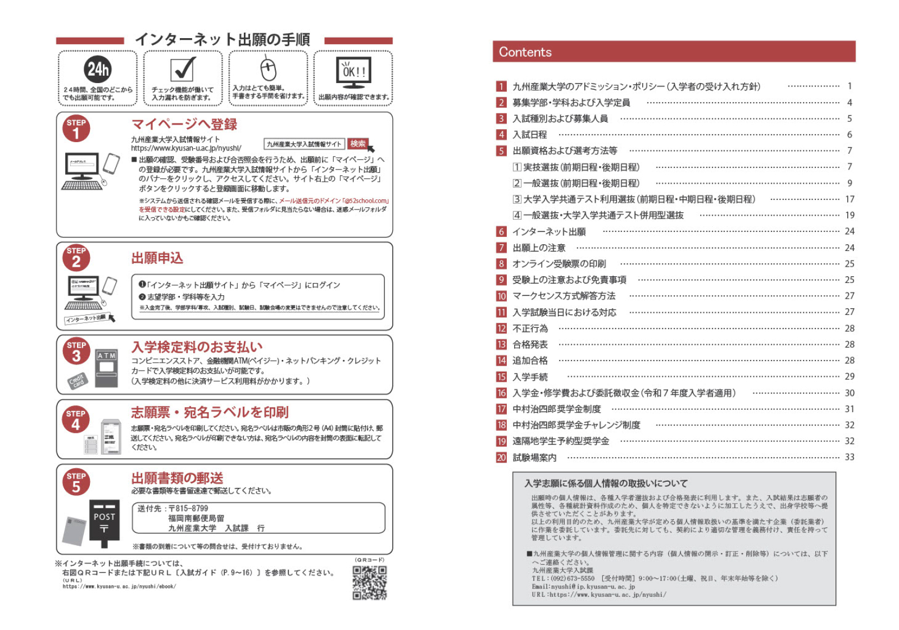
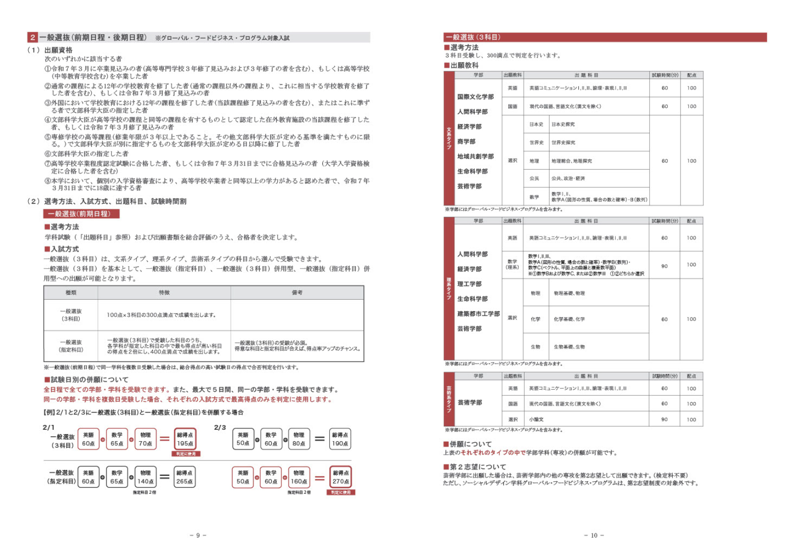

九州産業大学 入試ガイド・募集要項
#DeskTopPublishing #GraphicDesign
概要
九州産業大学入試課でのアルバイトでは、「大学入試ガイド」や「募集要項」といった受験生向け広報物の編集・制作業務に携わりました。職員の指示のもと、文章やレイアウトの修正、新しい情報の追加、既存内容の更新などを行い、紙面全体の構成や情報のバランスにも配慮しながら作業を進めました。最終的には、印刷用の入稿データの作成までを担当しました。
成果物仕様
入試ガイド：A4
募集要項：A4
入試ガイド


募集要項


制作現場で身につけた対応力
制作では、ただ指示通りに修正するのではなく、受験生にとって見やすく分かりやすい紙面を意識し、情報整理やレイアウトの工夫を行いました。限られたスペースに情報を的確に収める経験は、WebにおけるUI設計や情報設計にも応用可能です
また、職員とのやりとりを通じて意図を正確に汲み取り、柔軟に対応する力や、丁寧かつ正確に作業を進める姿勢を身につけました。こうした実務経験は、Webデザイナーとして、クライアントと円滑に連携して制作を進めるうえでも活かしていきたいです。